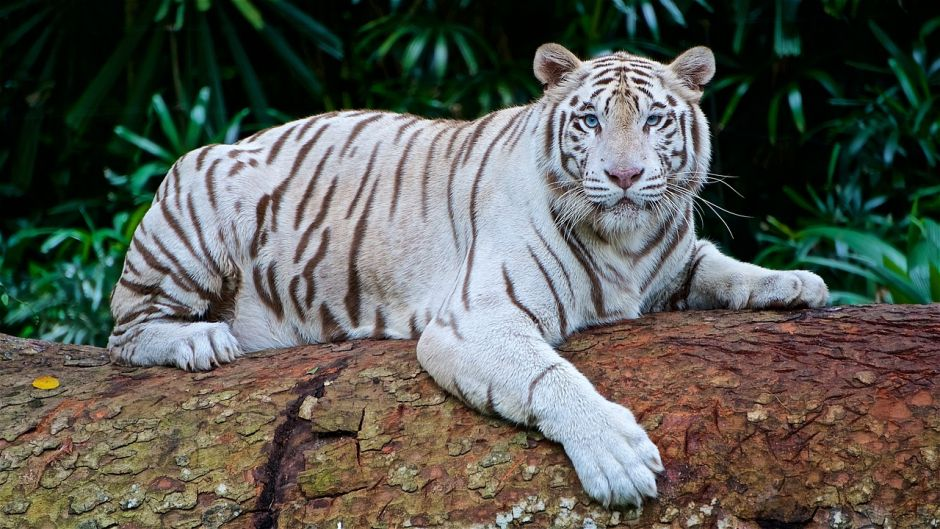
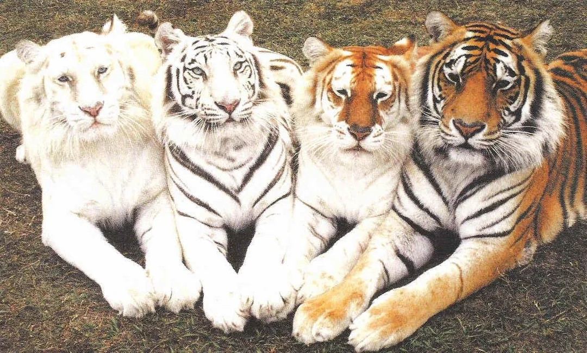
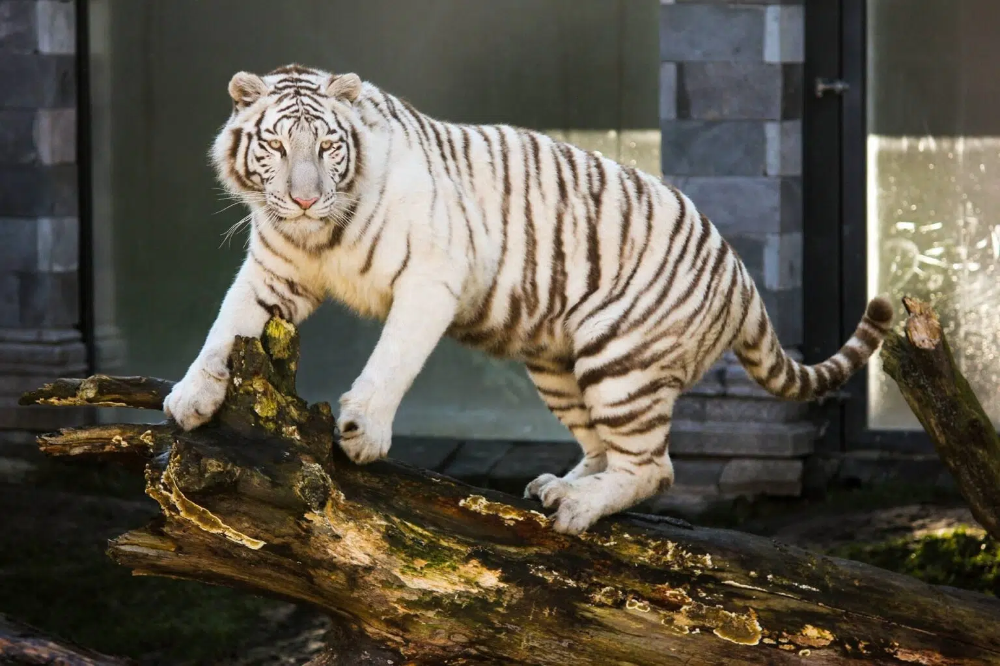
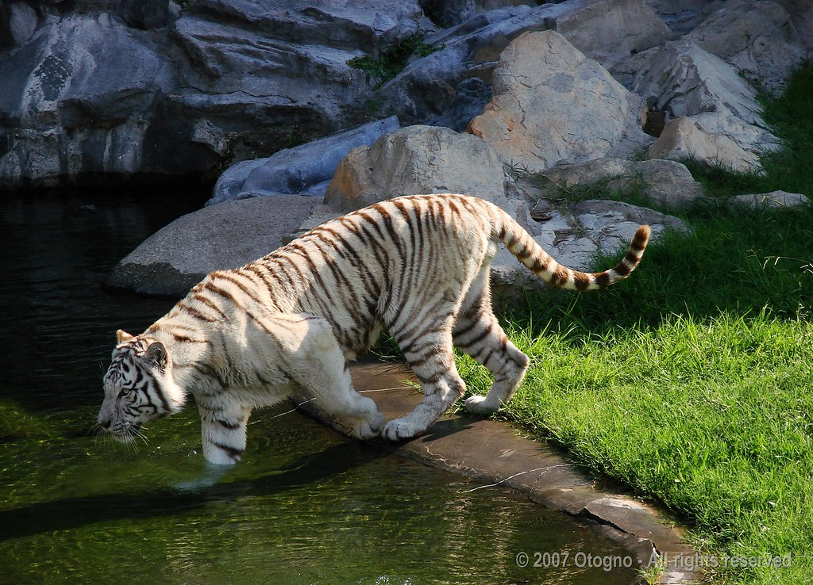

Caracteristicas Generales del Tigre Blanco:
El tigre blanco no es una subespecie de los tigres, si no, que son tigres que por su genética han perdido todo el pigmento naranja de su pelaje. Puede mantener las rayas negras normales de un tigre o estas pueden cambiar a colores grises, marrones o incluso ser un tigre completamente blanco con rayas muy pálidas.
Mide entre 2 y 3 metros de longitud, contando la cola que, por sí sola, llegaría a tener entre 75 y 95 centímetros. Un tigre blanco puede llegar a pesar 300 kilos en el caso de un macho, y hasta 180-190 en una hembra. Su esperanza de vida está en los 10-12 años en un macho; y en los 16 años en un tigre blanco hembra.
Es un animal que caza en solitario y tiene predilección por la noche antes que por el día (debido a su color que puede alertar a las presas y huir antes de que las alcance). Son muy buenos haciéndolo y el hecho de que se hayan adaptado ha servido para que todavía se puedan ver ejemplares en libertad de esta especie.